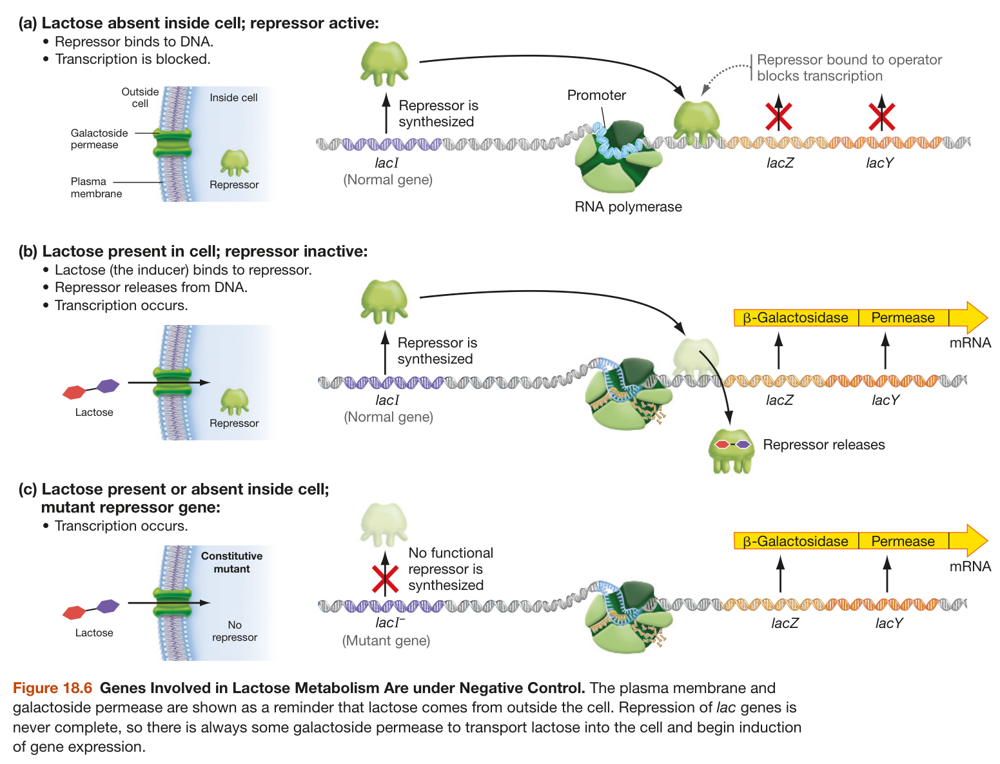
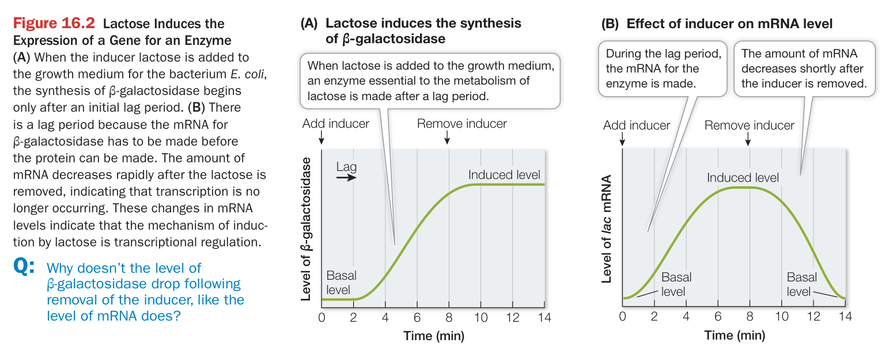
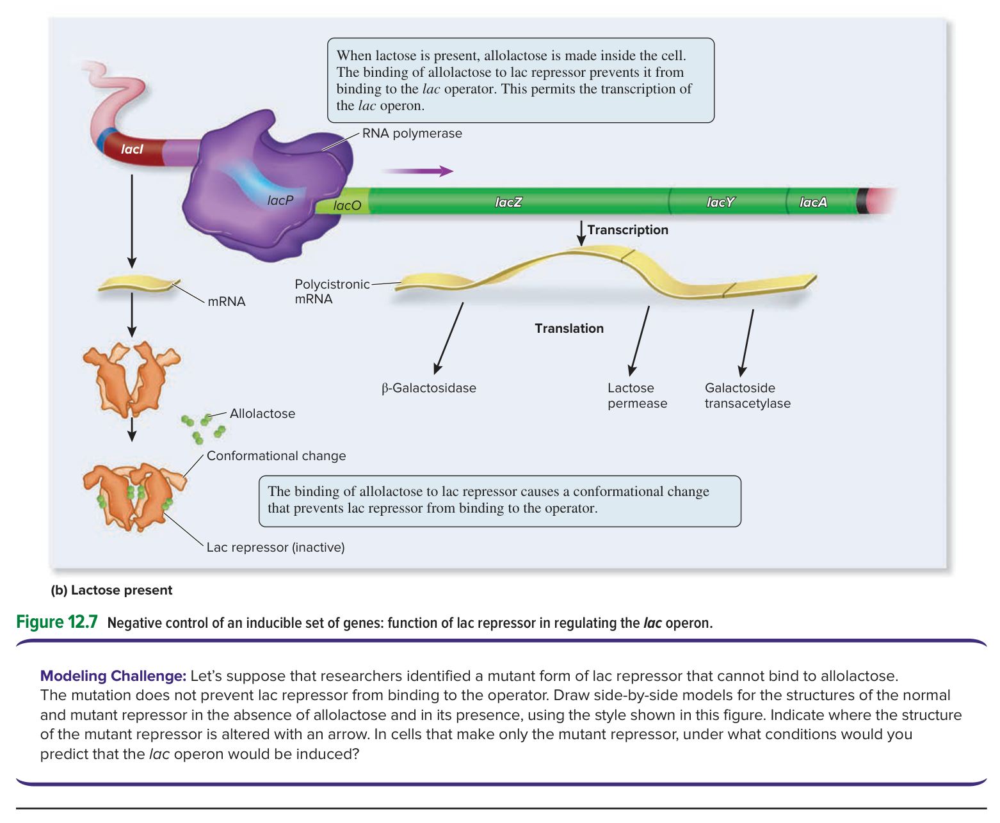
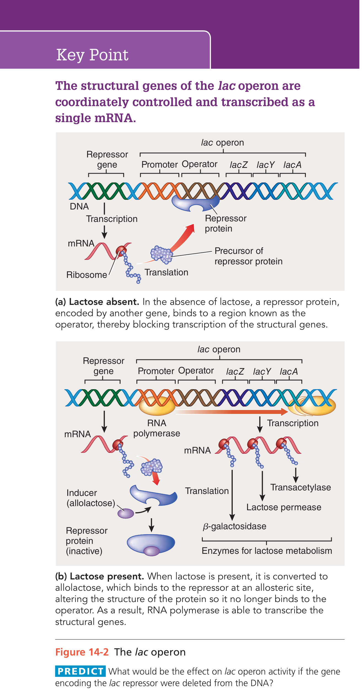

普通生物學 8 套課本怎麼講「大腸桿菌如何知道環境中有乳糖」？
如果沒乳糖時 lac 操縱組已經被抑制蛋白關起來，第一批乳糖是怎麼進細胞、怎麼變成異乳糖的？全面檢視 8 套大學普通生物學正典，一次看懂「完整解釋／只留線索／直接跳過」三種寫法光譜。
上課教到乳糖操縱組時，敏銳的學生一定會問這個「先有雞還是先有蛋」的問題：既然平時抑制蛋白把 lac 操縱組關起來了，細胞膜上沒有通透酶、細胞裡也沒有 β-半乳糖苷酶，那第一批乳糖怎麼進得來、怎麼轉變成異乳糖去開鎖？
真正答案其實很乾脆：抑制蛋白並不是 100% 焊死在操作子上。它會偶爾短暫脫離，讓 RNA 聚合酶偷偷滑過去完成極低頻率的基礎轉錄（basal / leaky transcription）。因此大腸桿菌平時細胞膜上就常備極少量的半乳糖苷通透酶，細胞質裡也常備極少量的 β-半乳糖苷酶。但是翻遍全部 8 套普通生物學課本會發現，只有 3 套把這個關鍵正面說清楚（Brooker 4e、Solomon 11e、Freeman 8e），另外 4 套只留下「平時有少量酵素」的線索卻沒接起因果（連最常用的 Campbell 12e／13e 都在這組），還有 1 套（Starr 14e）乾脆完全跳過。
即使沒有乳糖、抑制蛋白結合在操作子上，因為抑制蛋白會偶爾短暫脫離 DNA，RNA 聚合酶仍會極低頻率地轉錄出少量 lac mRNA。也就是說，操縱組的「關閉」並不是完全歸零，而是維持極低速的待機運轉。
由 lacY 基因轉譯出的細胞膜運輸蛋白，專門把細胞外的乳糖運進細胞質。乳糖是雙醣、無法自由穿過細胞膜，因此必須靠細胞膜上預先常備的極少量通透酶，才能把第一批乳糖帶進細胞。
乳糖進入細胞後，被原本就存在細胞質中的極少量 β-半乳糖苷酶（由 lacZ 編碼）在側反應中轉換而成的結構異構物。真正能與抑制蛋白結合、改變其立體結構使其脫離操作子的「誘導物（inducer）」，就是異乳糖。
01 普通生物學 8 套課本敘述深度一覽表
把資料庫中收錄的 8 套英文原文普通生物學課本逐字比對後，可以清楚分成三個層級：正面講通因果（3 套）、有寫出線索但沒點破因果（4 套），以及為了簡化而直接跳過（1 套）。
| 處理深度分級 | 課本與章節 | 課本實際怎麼寫 | 高中備課引用評價 |
|---|---|---|---|
| ✅ 完整解釋機制 （第 1 名） |
Brooker 4e Principles of Biology Ch. 12 |
明講抑制蛋白只是「大致上阻止」RNA 聚合酶越過操作子，因此無乳糖時仍會製造少量的乳糖通透酶、β-半乳糖苷酶與轉乙醯酶；接著第 1 步明寫「少量乳糖經由乳糖通透酶運進細胞質，β-半乳糖苷酶把其中一些轉換成異乳糖」。 | 因果鏈最完整：把「未完全阻斷 → 常備三種酵素 → 運入最初乳糖 → 轉為異乳糖」一次串通。 |
| ✅ 完整解釋機制 （第 2 名） |
Solomon 11e Biology Ch. 14 |
解釋無乳糖時操作子「幾乎總是」被抑制蛋白占據，但操作子短暫沒有抑制蛋白時會合成少量 mRNA（因大腸桿菌 mRNA 半衰期僅約 2–4 分鐘，故只合成極少數酵素分子）；有乳糖時，少數乳糖進入細胞並由細胞中原有的少數 β-半乳糖苷酶轉換成異乳糖。 | 漏轉錄機制寫得最生動：連為什麼酵素量極少（mRNA 半衰期短）都交代清楚。 |
| ✅ 完整解釋機制 （簡化異乳糖） |
Freeman 8e Biological Science Ch. 18 |
在圖 18.6 圖說直球點破：「圖中畫出細胞膜與半乳糖苷通透酶，以提醒乳糖來自細胞外。lac 基因的抑制從不完全，因此總會有一些半乳糖苷通透酶把乳糖運入細胞，開始誘導基因表現。」（正文另有括號註明：實際誘導物是異乳糖，但為求簡明暫稱乳糖為誘導物。） | 一句話最直白好記：直接指出「抑制從不完全＋膜上常備通透酶」，最適合課堂補充。 |
| ⚠️ 只留線索，未連因果 | Raven 13e Biology Ch. 16 |
寫出「即使沒有乳糖，lac 操縱組仍會以極低程度表現」，下一句寫「乳糖出現時會被運入細胞，並產生足夠的異乳糖，使操縱組得以誘導」。 | 最接近完整，但沒有解釋「為什麼會以極低程度表現」，也未點破運入乳糖靠的就是這批低表現酵素。 |
| ⚠️ 只留線索，未連因果 | Campbell 12e Campbell Biology Ch. 18 |
先提「沒有乳糖時，大腸桿菌只含有少數這種酵素（β-半乳糖苷酶）分子」，後段再提「異乳糖是由進入細胞的乳糖少量形成」。 | 留了兩條線索，但沒解釋為何平時會有少數酵素，也沒說最初的乳糖怎麼進細胞。 |
| ⚠️ 只留線索，未連因果 | Campbell 13e Campbell Biology Ch. 18 |
與 12e 幾乎完全相同：提及「只含有少數幾個這種酵素分子」以及「異乳糖是由進入細胞的乳糖少量轉變而成」。 | 臺灣最常用普生版本；但若只照 Campbell 講，遇到細心學生追問容易一時卡關。 |
| ⚠️ 只留線索，未連因果 | Sadava 12e Life: The Science of Biology Ch. 16 |
正面數據圖（圖 16.2）標出非零的「基礎量（Basal level）」，文字也寫平時「只有少量 β-半乳糖苷酶分子（另外兩種酵素也是如此）」、「不需要時 mRNA 合成量非常低」；但誘導段只寫「乳糖進入細胞後形成異乳糖」。 | 實驗曲線圖極佳，能讓學生親眼看到「沒誘導前不是 0」，但正文未點破因果箭頭。 |
| ❌ 直接跳過 | Starr 14e Biology: The Unity and Diversity of Life Ch. 10 |
直接寫「細菌只有在乳糖存在時，才會製造這三種蛋白質……乳糖不存在時，RNA 聚合酶無法與扭轉的啟動子結合，因此基因無法轉錄」，接著只說乳糖存在時「其中一些會轉換成另一種糖」（連異乳糖名稱都省略）。 | 最簡化入門寫法，完全迴避「先有雞還是先有蛋」問題。 |
02 4 張普生課本原圖實證：直接看見「常備通透酶」與「非零基礎量」
文字以外，這四張普生課本原圖特別適合在課堂投影給高中生看：從 Freeman 8e 特地把細胞膜上的通透酶畫出來，到 Sadava 12e 用曲線圖標出非零的 Basal level（基礎量），都能一眼破除「關起來等於完全歸零」的誤解。點擊任意圖片皆可放大檢視。

🔍 點擊放大檢視原圖
🔍 點擊放大檢視原圖
🔍 點擊放大檢視原圖
🔍 點擊放大檢視原圖03 全 8 套普通生物學課本中英原句逐本對照
以下完整保留 Vault 中 8 套普通生物學課本的英文原句與臺灣繁體中文翻譯，依「完整解釋 → 只留線索 → 直接跳過」順序排列，方便教師備課、出題或製作講義直接查證引用。
A 組：正面完整解釋「抑制不完全／基礎轉錄」（3 套）
B 組：有留「平時有少量酵素／極低表現」線索，但沒連成因果鏈（4 套）
C 組：簡化模型，直接跳過基礎表現（1 套）
04 給高中生物老師的備課建議與延伸閱讀
在臺灣高中課堂或教甄備課時，大多數老師會以 Campbell 13e 為主骨架。只要在講完「沒乳糖時抑制蛋白結合操作子」之後，順手補上 Freeman 8e 圖 18.6 的那一句——「lac 基因的抑制從來不是 100% 關死，細胞膜上平時就有極少量通透酶、細胞內也有極少量 β-半乳糖苷酶」——再配上 Sadava 12e 圖 16.2 的非零 Basal level 曲線圖，學生不但立刻秒懂「第一批乳糖怎麼進來」，更能順帶建立一個重要觀念：細胞裡的分子結合都是動態可逆的（會結合也會短暫鬆脫），並不是機械式的死開關。
延伸閱讀（本站相關專題）
- 想看更進階的大學遺傳學、分生與微生物學正典（Pierce 7e、Weaver 5e、Cox 2e、Prescott 12e、Lehninger 8e），以及大腸桿菌如何同時感測葡萄糖（PTS 磷酸接力 → cAMP–CAP 與誘導物排除），請見 大腸桿菌怎麼知道環境中有沒有葡萄糖與乳糖？。
- 想把「大腸桿菌偵測乳糖」跟「植物沒有眼睛卻能看見光、算準光週期開花」並排對照，請見 沒有眼睛、鼻子、嘴巴，生命如何感知世界？。
- 想釐清操作子本身到底會不會被轉錄或轉譯，請見 操作子會不會被轉錄與轉譯？（基因 vs. 子）。
- 想了解真核細胞為何幾乎不用操縱組，請見 為什麼真核細胞幾乎沒有操縱組？。
本頁盤點範圍涵蓋資料庫中 02 普通生物學 分類底下全部 8 套英文原文普通生物學課本譯本（Brooker 4e、Solomon 11e、Freeman 8e、Raven 13e、Campbell 12e、Campbell 13e、Sadava 12e、Starr 14e），8 套書皆已完整翻譯至原核基因調控章節，無缺章漏查。本頁僅呈現「普通生物學」層級的跨版本敘述比較；若需遺傳學、分子生物學、生物化學與微生物學專書之深入討論，請參閱上述延伸閱讀專題。另所有專業譯名（操作子、操縱組、啟動子、抑制蛋白、通透酶、異乳糖）皆依臺灣教育部審定名詞與原書譯本核對。